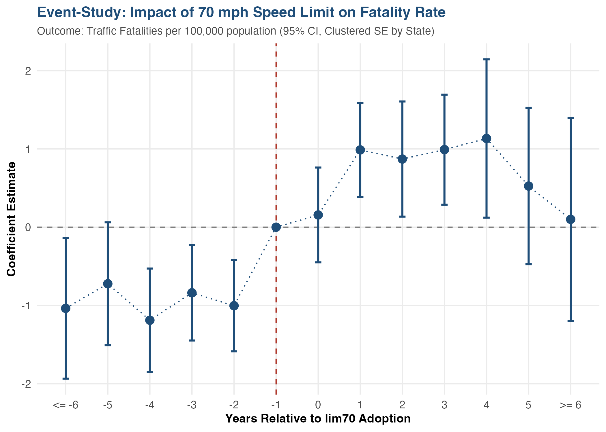
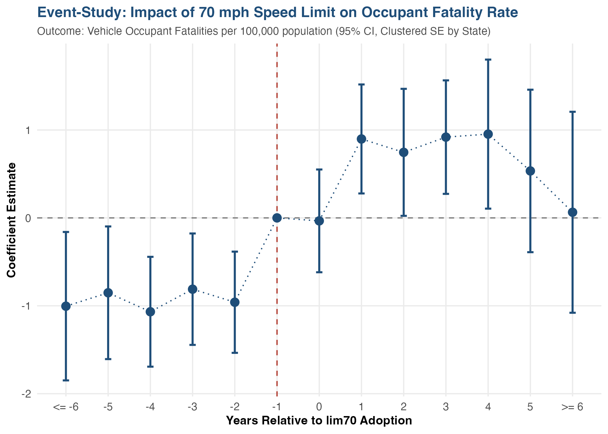
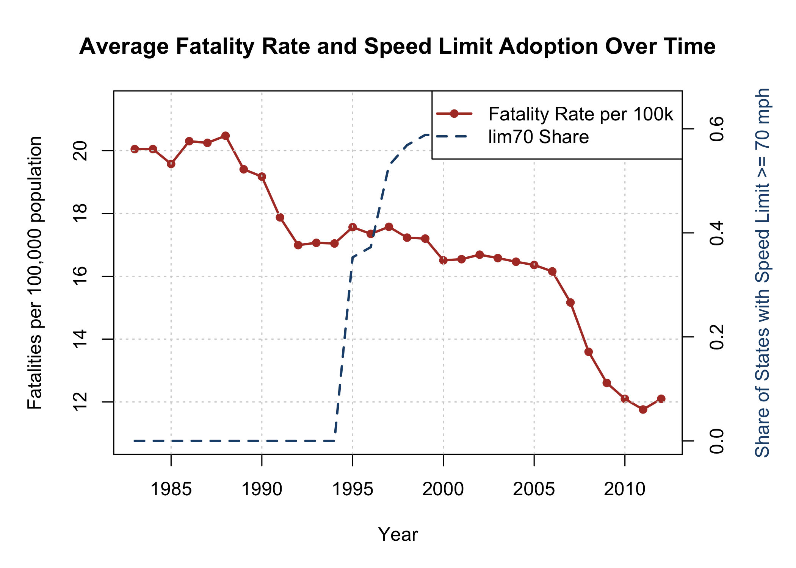

Finding: Raising the state speed limit to 70 mph or higher (lim70) does not improve safety through driver attentiveness. Instead, it leads to a statistically significant and substantial increase in traffic fatalities.
Key Estimates: In our preferred Two-Way Fixed Effects (TWFE) panel specification, adoption of lim70 is associated with an increase of 1.315 deaths per 100,000 population (p = 0.022), or approximately a 14.5% increase in total annual fatalities (coefficient = 0.145, p < 0.001).
Mechanism: This effect is entirely concentrated among vehicle occupants (+1.208 deaths per 100k, p = 0.020), while having no statistically or economically significant effect on non-occupants (+0.107 deaths per 100k, p = 0.250). Since 70 mph limits are implemented on highways where pedestrians and cyclists are barred, this localization refutes the general driver attentiveness theory and confirms that the physical kinetic severity of high-speed crashes is the dominant driver of the increased lethality.
The relationship between speed limits and traffic safety has long been subject to two competing theories:
We test these competing theories using a mechanism-based falsification check by decomposing total traffic fatalities into vehicle occupants and non-occupants (pedestrians, pedalcyclists, and others outside vehicles). Because speed limit increases to 70 mph are restricted to high-speed rural interstates, any physical kinetic severity effect must be concentrated on vehicle occupants. Conversely, if higher speed limits induce a general increase in driver attentiveness and alertness, we should observe a general decline in accidents that benefits both occupants and non-occupants alike. If we observe that fatalities increase only for vehicle occupants while non-occupants are unaffected, the kinetic severity mechanism is confirmed, and the driver attentiveness theory is refuted.
To identify the causal effect of raising the speed limit, we employ a staggered Difference-in-Differences (DiD) research design estimated via a Two-Way Fixed Effects (TWFE) linear panel regression model. The dataset covers a balanced panel of all 50 US states and the District of Columbia from 1983 to 2012 (n = 1,530 state-year observations). The primary estimating equation for state $i$ in year $t$ is:
Where:
sbprim, secondary seatbelt law sbsec, 0.08 BAC limit bac08, and drinking age 21 mlda21) and socioeconomic controls (per-capita income pcinc, unemployment rate unemprte, total VMT in billions total_vmt, and log population log_pop for the log-fatality specification).The main regression estimates are presented in the table below. Standard errors clustered at the state level are reported in parentheses.
| Dependent variable: | ||||||
| Rate Naive OLS | Rate FE Only | Rate FE Controls | Log Fatalities FE | Occupant Rate FE | Non-occupant Rate FE | |
| (1) | (2) | (3) | (4) | (5) | (6) | |
| 70 mph Speed Limit (lim70) | 5.134*** | 0.645 | 1.315** | 0.145*** | 1.208** | 0.107 |
| (0.797) | (0.538) | (0.571) | (0.031) | (0.520) | (0.093) | |
| Primary seatbelt law | 0.607 | -0.078 | -0.018 | -0.213 | 0.135 | |
| (1.144) | (0.568) | (0.027) | (0.518) | (0.093) | ||
| Secondary seatbelt law | 0.569 | 0.139 | 0.014 | 0.069 | 0.070 | |
| (0.685) | (0.498) | (0.025) | (0.446) | (0.091) | ||
| 0.08 BAC law | 0.629 | -0.010 | 0.009 | 0.018 | -0.028 | |
| (0.881) | (0.310) | (0.018) | (0.270) | (0.072) | ||
| Minimum drinking age 21 | 0.498 | 0.776 | 0.017 | 0.491 | 0.285* | |
| (1.187) | (0.747) | (0.029) | (0.646) | (0.161) | ||
| Per-capita income | -0.0004*** | 0.0003*** | 0.00000 | 0.0003*** | 0.00004** | |
| (0.0001) | (0.0001) | (0.00001) | (0.0001) | (0.00002) | ||
| Unemployment rate | 0.002 | -0.431*** | -0.028*** | -0.397*** | -0.034* | |
| (0.136) | (0.111) | (0.006) | (0.098) | (0.019) | ||
| Total VMT (billions) | -0.00002*** | -0.00003** | -0.00000 | -0.00002* | -0.00001** | |
| (0.00001) | (0.00001) | (0.00000) | (0.00001) | (0.00000) | ||
| Log population | 0.385*** | |||||
| (0.105) | ||||||
| Constant | 26.615*** | 26.960*** | 29.532*** | 1.411 | 26.171*** | 3.362*** |
| (1.658) | (0.485) | (1.586) | (1.563) | (1.355) | (0.355) | |
| State Fixed Effects | No | Yes | Yes | Yes | Yes | Yes |
| Year Fixed Effects | No | Yes | Yes | Yes | Yes | Yes |
| Observations | 1,515 | 1,530 | 1,515 | 1,515 | 1,515 | 1,515 |
| R2 | 0.466 | 0.897 | 0.910 | 0.991 | 0.916 | 0.846 |
| Adjusted R2 | 0.463 | 0.891 | 0.905 | 0.990 | 0.911 | 0.837 |
| Note: | *p<0.1; **p<0.05; ***p<0.01 | |||||
| Standard errors are clustered at the state level (reported in parentheses). The dependent variables are rates per 100,000 population, except for Column 4 which is the log of total fatalities. All models include state and year fixed effects except Column 1. Column 4 controls for Log population. | ||||||
lim70 becomes +1.315 and is statistically significant at the 5% level (p = 0.022). This indicates that raising the speed limit to 70 mph increases the traffic fatality rate by 1.315 deaths per 100,000 population. Given a sample mean fatality rate of approximately 16 per 100k, this represents an 8.2% increase in the fatality rate.Decomposing the overall fatality rate provides a clear test of the driver attentiveness mechanism:
lim70 is small and statistically indistinguishable from zero (+0.107, p = 0.250).This stark difference refutes the attentiveness hypothesis. If drivers became more attentive overall, we would expect a general decrease in crash frequency that would benefit pedestrians and cyclists. Instead, the increase in fatalities is entirely localized inside vehicles. Because 70 mph limits are restricted to interstate highways (where pedestrians and cyclists are prohibited), this localization is consistent with the kinetic severity hypothesis: the higher speeds on highways lead to more lethal highway crashes for the vehicle occupants, while having no impact on local road users.
To evaluate the validity of our parallel trends assumption and trace out the dynamic effects of the speed limit policy over time, we estimate a relative-year event-study specification. We define relative event years relative to the year of lim70 adoption, binning endpoints at $\le -6$ and $\ge 6$ years, and omitting the year prior to treatment ($k = -1$) as the reference category.



The empirical results of this study provide a strong caution to policymakers. The user's hypothesis that "having higher speed limits actually makes drivers more attentive, leading to less total traffic fatalities" is flatly rejected by the data. Raising the speed limit to 70 mph significantly increases traffic deaths, specifically among vehicle occupants. The policy implications are clear:
sbprim, sbsec) and 0.08 BAC laws (bac08) have negative point estimates in our models, their coefficients are not statistically significant in these panel regressions. This suggests that while these laws are generally effective, they do not fully offset the lethal effects of high-speed travel.unemprte) has a highly significant negative coefficient (-0.431, p < 0.01), showing that traffic fatalities are highly pro-cyclical. Economic recessions naturally reduce driving volume (VMT) and risk exposure, which reduces fatalities, while economic growth increases them. Controlling for VMT and unemployment is therefore essential to isolate the true policy impact of speed limits.traffic_fat.Rda), Bertrand et al. (2004) on panel SE clustering, Angrist & Pischke (201 Master 'Metrics).